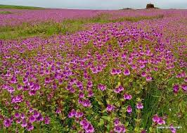
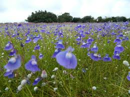
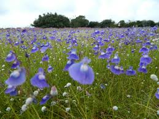

Kaas Plateau, also known as Kaas Pathar, is a beautiful place to visit. It is known for its vibrant seasonal wildflowers and diverse plant species, earning it the name "Valley of Flowers of Maharashtra." It is a UNESCO World Natural Heritage site.
 

Kaas plateau is a plateau located near Satara. It is situated high hill plateaus and grasslands turns into a 'valley of flowers' during monsoon season, particularly from August to early October. Kaas Plateau has more than 150 or more types of flowers, shrubs and grasses. The orchids bloom here for a period of 3-4 weeks during this season. Kaas plateau is a World Natural Heritage site, part of the Sahyadri Sub-cluster.[4][5][6] To control possible damage by tourists, the number of visitors to the plateau has been restricted to 3,000 per day.[4][7] In September, some of the most common flowering plants are Eriocaulon spp., Utricularia spp., Pogostemon deccanensis, Senecio grahamii, Impatiens lawii and Dipcadi montanum.[8] The plateau experiences a natural cycle of extreme conditions, with wet water-logged cool monsoons, very dry hot summer (45 °C) and dry winter (5 °C). The soil is acidic only a thin layer on top of laterite rock underneath. Extreme seasonality influences the ecology of the site.
Some of the must-see attractions include:
Learn more about this destination on this website.